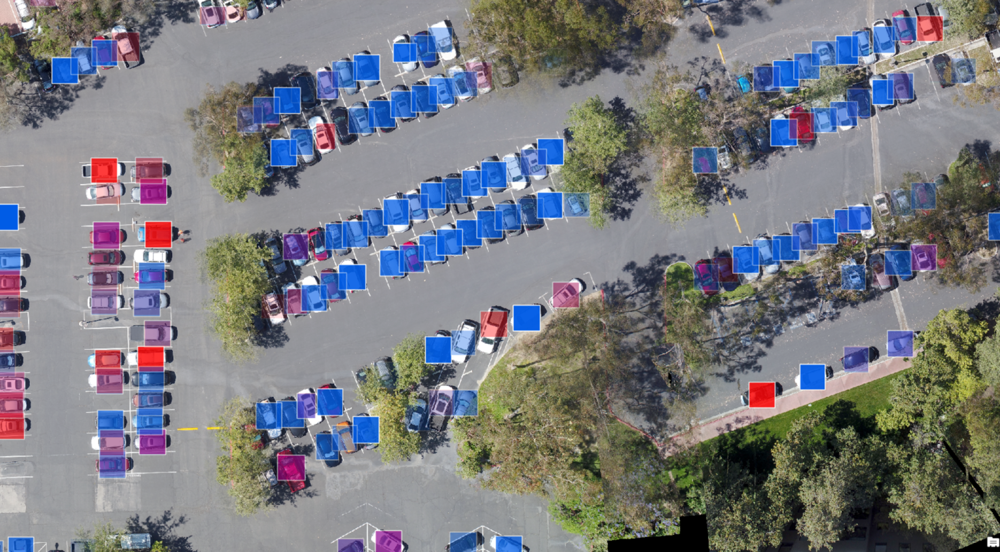

Smart Parking Management System using Deep Learning.
Developed for GovHack 2019
@sheece Gardezi &
@michael Brown
Have you ever found yourself driving around looking for a parking spot? And by the time you find one, it’s far away from where you need to be, and you’re already running late? This is a problem many of us face every day, and it costs individuals, businesses and the economy millions of dollars. According to academic literature, the average commuter spends at least 30 minutes per day trying to find a parking spot. Many have tried and failed to solve this problem before, however they are often restricted by high infrastructure costs. That is where our solution differs.
 - Using AI/ML and IoT (surveillance/traffic cameras) we will build an application which shows customers which parking spaces are free, and allows them to book and pay through the application for a specific parking spot. This will save the average ANU student 45 minutes per day in time, stress (very stressful experience trying to find a park) and money (reduced number of parking fines).
- Our trained neural net has a prediction accuracy of 95% on average across all weather conditions (rain, wind, overcast etc.) Based on a dataset of 695,000 images.
Link to our code: python notebook on github
Project Demo
note only highlighted spots are being monitered for this project.
Using live video feeds from existing cameras we can provide real time parking information to the public. We have trained our neural net to predict with at least 95% accuracy if a parking lot is occupied. This is robust to a range of weather types, various camera angles and a wide range of vehicles. Using existing cameras, and with minimal investment in additional cameras, we can set up a functioning parking system without the need for expensive sensors. For our purposes, low-resolution images are enough to ensure accuracy, however there may be demand for high quality live video feeds as well. In particular, police departments may wish to access these video feeds.
This technology is implementable with a relatively low cost as the dataset is based on low resolution images. Once the infrastructure piece is solved, we can supply the API to google maps or develop our own application which allows users to find, book and pay for parking spaces throughout the city.
Our neural net is easily extended to other applications as well. For example, using traffic cameras we could count in real-time the road utilisation rates and provide this information to city planners to optimise infrastructure spending. We can also combine datasets to see the correlation between road use and parking utilisation to make predictions for city planners.
We have the nation-building solution that will bring parking into the 21st century and ensure Australia is at the forefront of parking innovation.
Feel free to drop a comment or a question.
sheecegardezi@gmail.com